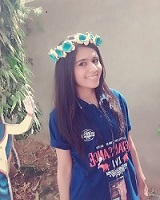

To work in a learning and challenging environment, utilizing my skills,creativity and knowledge with an opportunity for career advancement and contribution to organizational growth.
- Education
-
| Class/Course |
College/School |
Board/University |
Passing Year |
Aggregate%/CGPA |
| B.Tech |
Jaipur Engineering College & Research Centre,Jaipur |
RTU, Kota |
2018 |
75.78* |
|
| XII |
Emmanuel Senior Secondary School,Bundi |
CBSE |
2014 |
82.80 |
| X |
Emmanuel Senior Secondary School,Bundi |
CBSE |
2012 |
9.4CGPA |
*Upto V semester
- Technical Skills
-
Programming Languages: C, C++
Web designing: HTML,CSS,JAVASCRIPT
Tools and Software: Notepad++, CodeBlocks
- Awards & Achievements
-
Stood third position in 3rd semester in Information Technology Department.
Got 15 rank(in school) for DSAT-2010.
- Workshops/ Seminars Attended
-
Attended a seminar on Big Data and Hadoop held in JECRC.
Attended a seminar on Cloud Computing held in JECRC.
Attended a seminar on Ethical Hacking held in IMAGE IT SOLUTIONS.
- Extra-Curricular Activities
- Core Team of "CREATION CELL",in Renaissance, a national techno-cultural fesr of JECRC.
Participated in "SUBITO",in Renaissance, a national techno-cultural fest of JECRC.
Participated in online quiz competition “Indian Scenario of Electric Power and The Power of Energy Conservation”.
Co-ordinator of “WALK THROUGH PARADISE”,in Renaissance, a national techno-cultural fest of JECRC.
Participated in “SPELL BEE”,in Renaissance 2016, a national techno-cultural fest of JECRC.
Participated in “MAD HOUSE”,in Renaissance, a national techno-cultural fest of JECRC.
Participated in “SPELL BEE”,in Renaissance 2015, a national techno-cultural fest of JECRC.
Participated in “TUG OF WAR”,in Jecrc Sports Meet 2015.
Volunteer of “THE DOODLE CARNIVAL”,in Renaissance, a national techno-cultural fest of JECRC.
Participated in “TUG OF WAR”,in Athlon 2015.